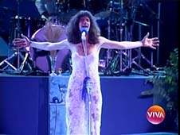
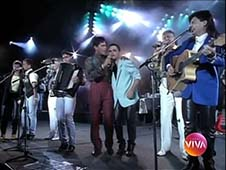
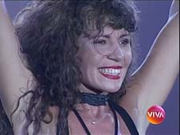
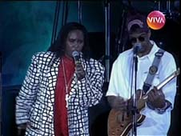
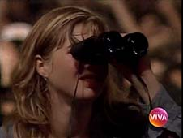
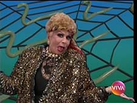
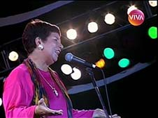
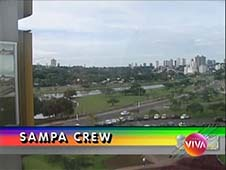
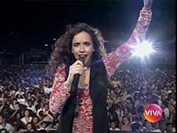
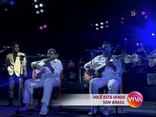

Som Brasil
Os programas foram reprisados no Viva sem ligação direta com a cronologia original de exibição. Por questões de padronização, aqui eles estarão listados conforme a transmissão na Globo.
| EPISÓDIO | EXIBIÇÃO | REPRISE | |||
|---|---|---|---|---|---|
| 1ª TEMPORADA - ANO 1 - 1993 | |||||
| 001 | 1x01 |  | "Simone: 20 anos de carreira" gravado em Curitiba (PR) direção Roberto Talma e Jodele Larcher narração Fernanda Montenegro com Roberto Carlos, Milton Nascimento, Ivan Lins, Pablo Milanes e Ney Matogrosso |
04/05/1993 | 03/07/2010 |
| 002 | 1x02 |  | "Sertanejo I" gravado em Ribeirão Preto (SP) direção Jodele Larcher direção artística Roberto Talma com Leandro & Leonardo, Chitãozinho & Xororó, Zezé di Camargo & Luciano, Tonico & Tinoco e Moraes Moreira & Sivuca |
01/06/1993 | 12/06/2010 |
| 003 | 1x03 |  | "Forró" gravado em Recife (PE) direção Jodele Larcher e Rogério Gomes com Alceu Valença, Elba Ramalho, Fagner, Geraldo Azevedo, Oswaldinho, Robertinho de Recife e Leandro & Leonardo |
29/06/1993 | 04/09/2010 |
| 004 | 1x04 |  | "Jorge Ben Jor" gravado em Niterói (RJ) direção Jodele Larcher direção artística Roberto Talma com Daniela Mercury, Fernanda Abreu, Barão Vermelho, Sandra de Sá, Skank e Fundo de Quintal |
27/07/1993 | 29/05/2010 |
| 005 | 1x05 |  | "Sertanejo II" gravado em Campinas (SP) direção Jodele Larcher e Roberto Talma com Chitãozinho & Xororó, Leandro & Leonardo, Zezé di Camargo & Luciano, Chrystian & Ralf e Gian & Giovani participação especial Orquestra Sinfônica Municipal de Campinas e Asa Branca |
24/08/1993 | 10/07/2010 |
| 006 | 1x06 |  | "Raul Seixas", apresentação de Alexandre Frota gravado em São Paulo (SP) direção Jodele Larcher e Roberto Talma com Zezé di Camargo & Luciano, Paulo Ricardo & RPM, Deborah Blando, Barão Vermelho, Alceu Valença, Leandro & Leonardo, Jerry Adriani, Chitãozinho & Xororó, Celso Blues Boy e Hanoi-Hanoi, Chrystian & Ralf, Gabriel o Pensador e Dercy Gonçalves |
21/09/1993 | 05/06/2010 |
| 007 | 1x07 |  | "Vinícius de Moraes: o poeta da paixão" gravado em Rio de Janeiro (RJ) direção Jodele Larcher com Milton Nascimento, Francis Hime, Nana Caymmi, Edu Lobo, MPB-4, Os Cariocas, Leila Pinheiro, Quarteto em Cy, Joyce, Pery Ribeiro e Toquinho participação especial Tom Jobim |
19/10/1993 | 22/05/2010 |
| 008 | 1x08 |  | "Romântico" gravado em Piracicaba (SP) direção Roberto Talma e Jodele Larcher com Zezé di Camargo & Luciano, Roupa Nova, Emílio Santiago, Chitãozinho & Xororó, Sampa Crew, Edmon, Roberta Miranda, Elymar Santos e Negritude Junior |
16/11/1993 | 14/08/2010 |
| 009 | 1x09 |  | "Daniela Mercury" gravado em Salvador (BA) direção Roberto Talma e Jodele Larcher com Chico Buarque, Timbalada, Vânia Abreu, Gilberto Gil, Meninos do Pelô, Olodum, Sandra de Sá, Araketu, Elba Ramalho, Lulu Santos e Carlinhos Brown |
14/12/1993 | 19/06/2010 |
| 010 | 1x10 |  | "Pagonejo", apresentação de Asa Branca gravado em São Paulo (SP) direção Jodele Larcher com Raça Negra, Zezé di Camargo & Luciano, Casa Nossa, Grupo Raça, Gian & Giovani, Ginga Pura, Irmãs Galvão, Razão Brasileira, Só Pra Contrariar, Eliana de Lima, Só Preto Sem Preconceito, Pena Branca & Xavantinho |
31/12/1993 | 07/08/2010 |